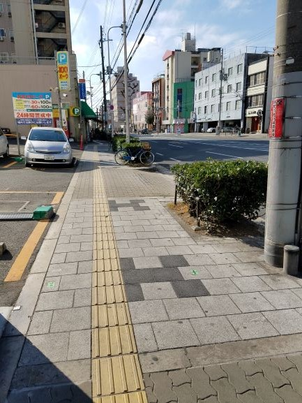

皆さんこんにちは～。本日のひとりグルメ旅は大阪市西成区！
西成区には安くておいしい立ち飲み屋がたくさんあるんですー。
今日も駅近で気軽にいけるところへ、ひとりで行ってきました。
最寄りはJR新今宮駅。JR天王寺駅から一駅です。御堂筋線の動物園前駅も近いです！アクセスは最高です。
JR天王寺駅から歩いても１０分かかりません。今、朝なので散歩もかねて私は歩いて行きました。
朝の散歩はとても気持ちいいですね！！！

大通りを歩きます。
この道沿いの左手に一軒目があります。
朝だけど、やっぱここは雰囲気違いますねー。
できるだけ人と目を合わせないように進みます。笑
本日一軒目に到着「マルフク」
朝１０時過ぎですが、めっちゃ人がいます。多分いつもたくさん人がいます。おそらく14時くらいがすいてると思います。。。
めっちゃ安い、うん。
朝からビールをいただきました笑。背徳感がすごいです。
ビールを飲みながらここの定番のホルモンを食べました。めちゃくちゃうまいです。
この安さでこのうまさは信じられません。たれも甘辛でビールが進む。。。
もう一品は豚足を食べました。身がとろとろで、絶品です。。しかも安いし。
はしごしなければならないのでここでお会計。もうここで大満足です。来て良かった。
ほろよい気分で二軒目「やまき」
ほろ酔い気分で西成区の奥へ進みます。私、ビール一杯で酔うんです。。
途中で右に曲がって、ガード下のエリアへ。
ここは大通りとは違ってだいぶディープなので、圧倒されますね。。。
ガード下に入ってすぐに、二軒目到着です。ここも人が多いですねー。
またビールをいただきました。ホルモンにはビールが合いますね！
ホルモン串を食べました。あー、、、うまい。
マルフクとはまた違った味付けです。食べ比べするのも楽しいですね。
あと肝も食べました。これもうまいなあああああ！
マルフクもやまきも朝早くから営業してて、おすすめです！
たまーに、やまきやってない日がありますので、気を付けて！
しめの二軒目「たつ屋」

ほんとはもっと行きたい店がまだまだあるんですが、そろそろしめのお店へ。
ディープエリアを離れます。来た道を戻って最初天王寺から来た道へ。
ファミマの裏側へ回ったところへ三軒目。ちょっとわかりにくいとこにあります。
絶品ホルモン鍋をいただきました。今日はホルモンづくしでしたね！
これもこのボリュームでこの値段は信じられません。。
全部食べられない。。。
ほんとはうどんとか中華そばをしめにいれたいんですけど、それはまた今度で！
正直、この店だけでおなかいっぱいになります。笑
かなりおなかいっぱいで、大満足です。今日も幸せな一日でした！